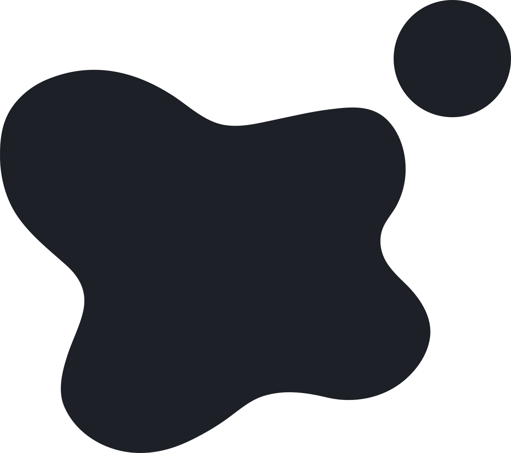
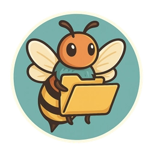
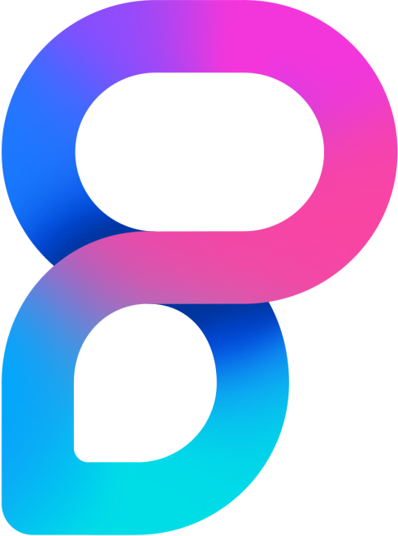
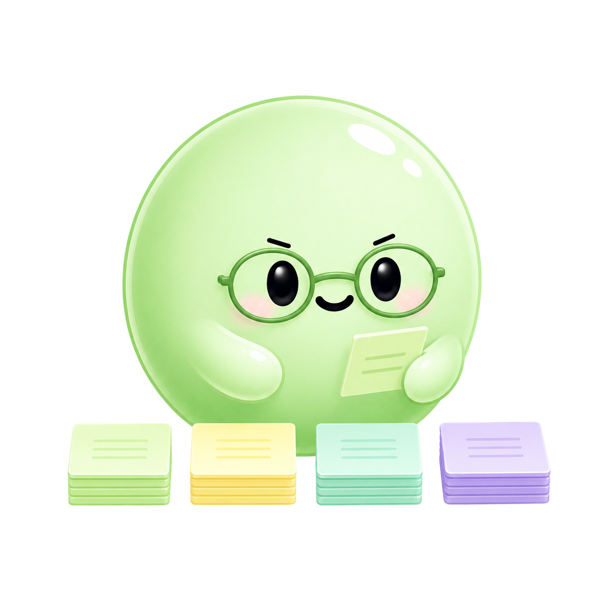
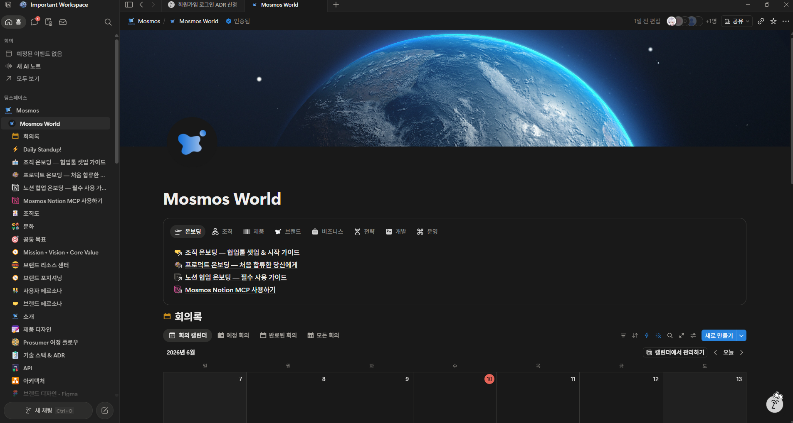
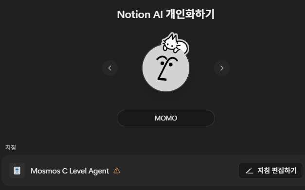
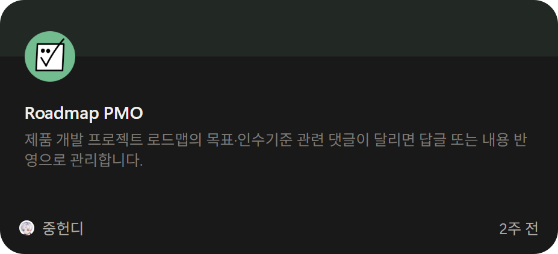
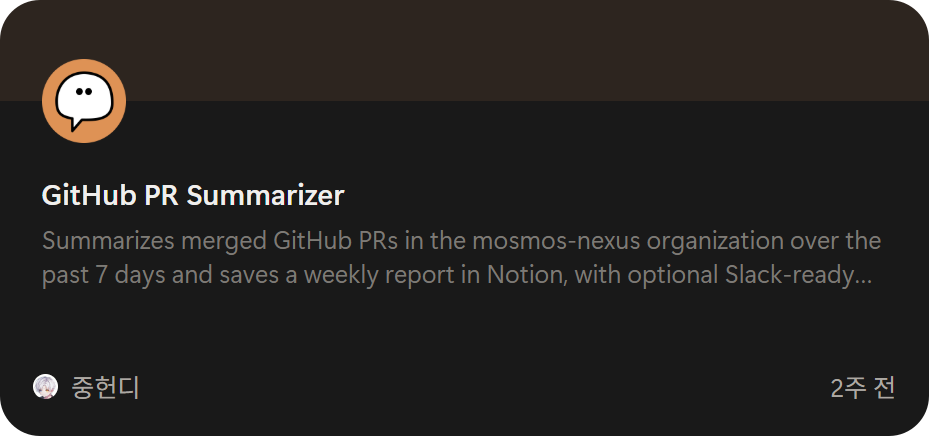
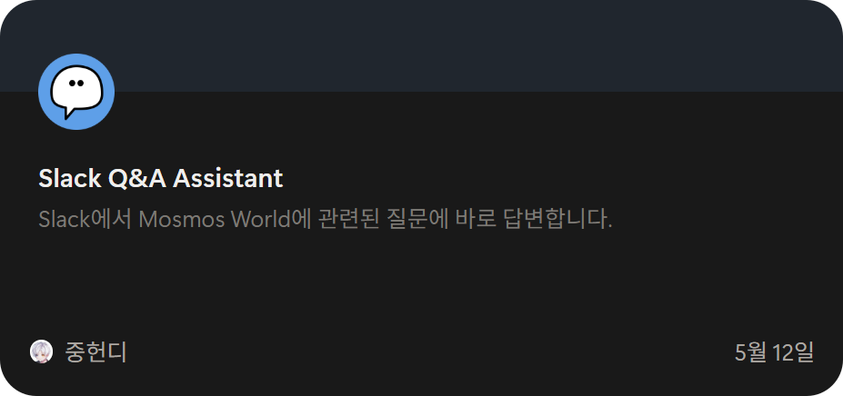

내 AI가 자라는 세계, Mosmos — A world where my AI grows up.
자잘한 일은 맡기고, 중요한 것에 집중하세요
휴대폰으로 함께 보세요
QR을 찍으면 이 발표를 폰에서 바로
QR을 찍으면 이 발표를 폰에서 바로
한 사람에서 시작된 이야기
개인에서 시작해, 비즈니스가 되다



개인(블로그) → 오픈소스(Proact0) → 비즈니스(Mosmos) — 변하지 않은 건, 늘 그 중심에 Notion이 있었다는 것

혼자 쓰던 방식을, 팀으로
이번엔, 조직을 설계로 운영했다
사람과 AI가 한 팀처럼 일하는 방식을,
누구나 가져다 쓰게 오픈소스로 공개했어요. (노션·디스코드·깃허브 기반)

흩어진 도구들이, 노션 하나로 모여요
하나의 허브, 일곱 갈래의 연결
Notion 허브모든 정보의 원본
함께 쓰는 협업 도구
Oopy
팀에서, 회사로
실험이 아니라, 하나의 회사로
개인에서 시작한 운영 방식이,
이제 회사 전체를 움직이는 중심이 됐어요.
내 AI(Mos)와 전문가들(Mon)이 함께 일하는, 노션으로 굴러가는 스타트업 —
개인 → 오픈소스 → 비즈니스, 그 마지막 무대입니다.

목표만 말하면 끝나는, 내 AI 팀
목표만 말하면, 내 AI(Mos)가 전문가들(Mon)을 조율해 결과까지 가져옵니다.
잘 통한 방법은 저장돼, 다음엔 더 빨라져요.
잠시 후, 라이브 데모에서
전부 실제 워크스페이스에서 보여드릴 거예요
우리 회사 전용 AI
우리 일과 맥락을 아는 노션 AI 비서
AI 스킬
반복 업무를 저장해 두고 다시 쓰기
Slack 연동
Slack 대화가 곧바로 노션 업무로 이어져요
자동 정리
한 번 입력하면 표가 알아서 채워져요

우리 회사를 통째로 아는 AI 비서
TAKEAWAY
제품보다 운영 체계를 먼저 세우세요 — 신생 팀이라면 Notion 하나로 충분히 시작할 수 있어요.
이제, 직접 보여드릴게요
우리 회사 전용 AI
AI 스킬
 Slack 연동
자동 정리
Slack 연동
자동 정리



그럼, 실제 워크스페이스에서 보여드릴게요 — Mon들이 먼저 준비하고 있어요